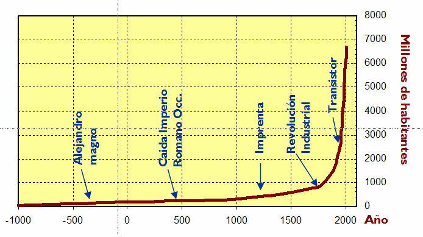

8. Edad Contemporánea.
La Edad Contemporánea abarca desde la Revolución Francesa hasta nuestros días. La transición de la edad Moderna a la Contemporánea se asocia a dos procesos fundamentales: aparición de la sociedad capitalista, cuyo síntomas iniciales comenzaron en Inglaterra con la primera Revolución Industrial; y las revoluciones (Revolución Francesa, Guerras de Independencia, revoluciones europeas) que marcaron la transición hacia el modelo social y fórmulas de organización del poder totalmente diferente a los de la Edad Moderna.
OBJETOS TÉCNICOS Y TECNOLOGÍAS INCORPORADAS
- Vacuna contra la viruela. En 1796 Edward Jenner desarrolló la primera vacuna al inyectar a un niño una variante benigna de la viruela humana, la viruela vacuna. Sus investigaciones iniciaron el método inmunológico de protección contra enfermedades infecciosas que luego continuaría Louis Pasteur. Junto con el descubrimiento de los microorganismos y los medicamentos, es uno de los hitos de las tecnologías médicas.
- Cemento: en 1824 Apsdin patenta el cemento artificial o Portland; en 1824, Coigner desarrolla el encofrado para la construcción de edificios, y en 1848, Lambot utiliza por primera vez el cemento armado. Esta nueva forma de construcción contribuyó al cambio en la fisonomía de las ciudades, cada vez más grandes debido a los flujos migratorios hacia las áreas urbanas.
- El acero. A finales del siglo XVIII, se sustituye el carbón vegetal por el carbón mineral en la elaboración del acero. En 1856, Henry Bessemer inventa el procedimiento para obtener acero de gran calidad y a bajo costo. Poco más adelante, Martin y Siemens inventan el convertidor que permite su afino.
- Electricidad: La primera aplicación práctica de la electricidad fue la pila de Volta (1800). Sin embargo hubo que esperar hasta 1821 hasta la aparición del primer motor eléctrico (Michael Faraday). Michael Faraday desarrolla también la dinamo en 1831, aunque no fue hasta 1867 cuando Werner von Siemens puso a punto el primer dispositivo capaz de generar corriente eléctrica en cantidades industriales. La invención de las dinamos permitió la generalización del uso de la electricidad como fuente de luz y potencia en los domicilios. En 1879 Thomas A. Edison desarrolla la primera lámpara de incandescencia. En 1888, Nikola Tesla inventa el primer motor eléctrico de corriente alterna.
Estos inventos supusieron el punto de partida para el desarrollo de una tecnología eléctrica que desbancó a la basada en la máquina de vapor. Con el acero, la electricidad y el petróleo, surge la llamada Segunda Revolución Industrial.
- Motor de combustión interna. El ingeniero francés Étienne Lenoir construyó en 1860 el primer motor que utilizaba como fuente de energía una mezcla de gas y aire. Nikolaus August Otto estableció en 1861 el principio de funcionamiento de los motores de cuatro tiempos (Ciclo de Otto). En 1885, basándose en las investigaciones de Otto, Karl Benz, construyó el primer automóvil equipado con un motor de gasolina de cuatro tiempos. En 1897, Rudolf Diesel inventa un motor alimentado por un combustible menos inflamable que la gasolina (el gasóleo), que lleva su nombre.
Éste fue el origen de la industria automovilística, que se vería impulsada en 1904 con la introducción, por parte de Henry Ford, de la cadena de montaje. La generalización de los motores de combustión con destilados del petróleo revolucionó el transporte de pasajeros y mercancías por tierra, mar y aire, la industria, la construcción…, ya que ofrecían potencias similares a las de las máquinas de vapor, pero en menores tamaños y con menores costes de mantenimiento.
- Nuevas formas de organización del trabajo: El trabajo en las fábricas introdujo grandes novedades tanto del tipo y propiedad de los medios de producción, como de la organización y realización del trabajo. El alto coste de las máquinas propició la pérdida de la propiedad de los medios productivos por parte del trabajador, y del control del modo de trabajo. Surgieron diferentes modos de organización del trabajo con el objetivo fundamental de reducir de costes de producción. Ejemplos de estos son el taylorismo, el fordismo y el toyotismo:
-
- Taylorismo u organización científica del trabajo: consistente en la especialización del trabajo y la eliminación de los tiempos muertos y los movimientos inútiles de los trabajadores. Esto se lograba a través de tres métodos fundamentales:
-
-
-
-
- Aislando a cada trabajador otros compañeros bajo el estricto control del personal directivo de la empresa, que le indicaba qué tenía que hacer y en cuanto tiempo,
- Especialización del trabajo: haciendo que cada trabajador produjera una parte del producto, perdiendo la idea de totalidad y automatizando su trabajo.
- Pagando distintos salarios a cada obrero en función de su rendimiento laboral. Esto fomentaba la competencia entre los propios compañeros y aceleraba, aún más, los ritmos de producción.
-
-
Cada trabajador desempeñaba una función específica, lo que dio lugar a una mejora de la calidad, una optimización de los tiempos y un aumento de la producción. Sin embargo, el exceso en la especialización y la repetición monótona de movimientos generaba distracciones, accidentes, absentismo laboral, pérdida de la calidad del trabajo, y la insatisfacción del obrero (nunca veía el producto terminado).
-
-
- Fordismo: Henry Ford, el primer fabricante de automóviles a precios moderados, consiguió disminuir los costos de producción mediante la creación del trabajo en serie en cadenas de montaje. De esa manera eliminaba el desplazamiento del obrero en busca de piezas. Se trataba de producir mucho de un mismo modelo standard (inicialmente el Ford T negro). El trabajo en la cadena se convirtió en repetitivo, resultando agotador y monótono para el obrero. El fordismo fue utilizado en forma extensiva en la industria de numerosos países, hasta la década de los 70 del siglo XX (cuando fue reemplazada por el toyotismo).
-
-
-
- Toyotismo: introducido por el ingeniero Ohno de la empresa automotriz Toyota, el toyotismo modifica las características negativas del fordismo, basándose en la flexibilidad laboral, el fomento del trabajo en equipo y la participación del obrero en decisiones productivas. Se produce a partir de los pedidos hechos a la fábrica (demanda), que ponen en marcha la producción Con el sistema just in time, los componentes son provistos en el momento en que se necesitan, disminuyendo los costos. Aunque mantiene la producción en cadena, reemplazan las tareas repetitivas más agobiantes con robots industriales. El trabajador debe ser multifuncional (se encarga de operar tres o cuatro máquinas) y realiza varias tareas de ejecución, reparación, control de calidad y programación.
-
- Redes de Comunicación: el auge de las telecomunicaciones, y en especial las redes de Internet, ha dado lugar a una economía global. Estas redes de comunicación tiene su antecedentes en el telégrafo que fue, sin duda, el primer sistema de comunicación de repercusión mundial (Samuel F. B. Morse). Su auge fue tal, que en 1866 se tendió el primer cable submarino entre Europa y América. El siguiente gran avance fue la invención del teléfono, por el italiano Antonio Meucci en 1855 y patentado en 1876 por Alexander Graham Bell. En 1897, Nikola Tesla patentó la transmisión por radio.
- Normalización: la creciente complejidad del tejido industrial, obliga a fijar unos criterios en los que los distintos eslabones del proceso productivo se encuentran implicados (por ejemplo, para fabricar unas tuercas hay que consensuar previamente los distintos calibres de los tornillos). Según AENOR (Asociación Española de Normalización) una norma es un documento de aplicación voluntaria que contiene especificaciones técnicas basadas en los resultados de la experiencia y del desarrollo tecnológico. Las normas son el fruto del consenso entre todas las partes interesadas e involucradas en la actividad objeto de la misma.
En la actualidad existen normas para casi todo: sobre la composición y características de las materias primas (plásticos, aceros, madera,...), normas sobre productos industriales (tornillos, electrodomésticos, herramientas,...), sobre productos de consumo (juguetes, mobiliario, zapatos, productos alimenticios,..), sobre análisis físico-químicos, sobre maquinaria, servicios de limpieza, residencias de la tercera edad, etc.
- Transistor. En 1948, tras 20 años de investigación, John Bardeen, Walter House Brattain, y Wiliam Schockley construyeron el primer prototipo operativo de transistor en los laboratorios de la empresa Bell. La aparición de este dispositivo, basado en el uso de semiconductores impurificados, supuso el inicio de la Tercera Revolución Industrial, al posibilitar la producción de aparatos electrónicos muchos más pequeños, de bajo consumo y de bajos costes (hizo innecesario el empleo de las grandes válvulas de bombilla). Su aparición marcó el comienzo de la era de la comunicación y de la información, de la tecnología espacial y de la moderna investigación científica.
- Nuevas energías. Nacen las nuevas energías, que intentan frenar la degradación medioambiental del planeta mediante el aprovechamiento inteligente de las materias primas y los recursos naturales. Ejemplos se estas energías son la energía solar, eólica, geotérmica, mareomotriz, biomasa.,...
- Otros inventos de este período: bolígrafo, microscopio, teléfono, televisor, GPS, aeroplano, neumático, automóvil, tecnología aeroespacial, biotecnología, tetrabrik, ingeniería genética, electrodomésticos, industria química (plásticos, fertilizantes, plaguicidas, fungicidas....), ordenador, CDs, DVDs, Blue Ray, memoria flash, Tablet, smartphone, reactor nuclear, microscopio electrónico, superconductores...
RELACIÓN TECNOLOGÍA-SOCIEDAD. SOCIEDAD INDUSTRIAL (EDAD MODERNA Y S. XIX)
Fruto de la Revolución Industrial, se producen los siguientes hechos sociales :
- Gran crecimiento de la población mundial: provocado por el gran aumento de los recursos disponibles y desarrollo de las grandes urbes (Londres, Manchester, Nueva York., Chicago...): propiciada por la alta migración del campo a las zonas industrializadas.
- Aparición de la clase capitalista (burguesa, propietarios de los medios productivos) y la clase trabajadora (obrera, mano de obra). A diferencia con épocas anteriores el obrero es propietario de su capacidad de trabajo, es formalmente libre y puede venderla a quien le ofrezca un mejor salario o condiciones.
- Movimientos sindicales: la Revolución Industrial trajo consigo un nuevo sistema de producción, el capitalismo, en el que la situación laboral del obrero empeora notablemente. Hacinado en las grandes urbes industriales y en competencia con el resto de trabajadores, se ve obligado a vender su fuerza de trabajo a cambio de salarios cada vez más bajos, a incorporarse al mercado laboral a edades cada vez más tempranas y a jornadas laborales cada vez más amplias. De ahí que aparezcan los primeros movimientos sindicales para defender los derechos de la clase trabajadora.
- Paro: puesto que la máquina sustituyó al hombre, ya no había trabajo para todos, surgiendo así el paro.
- Cambios políticos y económicos. Los avances tecnológicos impulsaron cambios de tipo social y económico. Ante las nuevas situaciones surgidas, los pensadores propusieron diferentes formas de organización económico-social (capitalismo, comunismo) y política (democracias, sistemas autoritarios o dictaduras).
RELACIÓN TECNOLOGÍA-SOCIEDAD. SOCIEDAD AVANZADA (SS. XX Y XXI)
Durante este periodo la mejora de la administración, la sanidad, la educación, servicios sociales...etc, y la facilidad de acceso a las nuevas tecnologías han provocado un aumento significativo en el nivel de vida y el incremento de la población. A finales del s. XX y principios del XXI surgen nuevos e importantes factores que determinan nuevas relaciones, usos sociales y económicos: la normalización, las nuevas energías, el concepto de desarrollo sostenible. Características de la sociedad actual son:
- Estancamiento de la población en los países occidentales. En casos como España, mitigados por la inmigración desde países pobres.
- Clase media: En los países industrializados del Hemisferio Norte la clase media es la más numerosa. En dichos países se constata la disminución de los puestos de trabajo en los sectores económicos primarios (agricultura, ganadería, pesca, silvicultura....) y secundarios (minería, industria, energía y producción) y su aumento en el sector terciario (transporte, comunicaciones, servicios, comercio, turismo, educación, administración, sanidad...).
- Aumento de las desigualdades sociales: en unos países hay excedentes de alimentos, y en otros ni tan siquiera están cubiertas las necesidades básicas.
- Sociedad de consumo: debido a los cambios sociales y culturales, la influencia de la publicidad y los medios de comunicación, surge una sociedad de consumo caracterizada por la cultura del usar y tirar.
- Globalización: El gran desarrollo de las telecomunicaciones, en especial Internet, y del transporte hace posible, hoy en día, que cualquier acontecimiento que se produzca se conozca mundialmente en pocos minutos. La consecuencia inmediata ha sido la mezcla de las diferentes culturas más allá de las fronteras de los diferentes países. A este fenómeno se le ha denominado globalización, y marca una nueva era histórica.
- Ello, además, lleva a que las innovaciones propicien una superespecialización de los trabajadores, que requiere, a su vez, la rápida adaptación a las nuevas formas de efectuar su cometido.
- La democracia es el modo de organización social dominante en Occidente. El paro es uno de los principales problemas de la economía.
- La mejora del sector público (sanidad, educación, servicios sociales) y la facilidad de acceso a las nuevas tecnologías contribuyen a la calidad del nivel de vida de la población y, por tanto, a un incremento del número de habitantes del planeta.